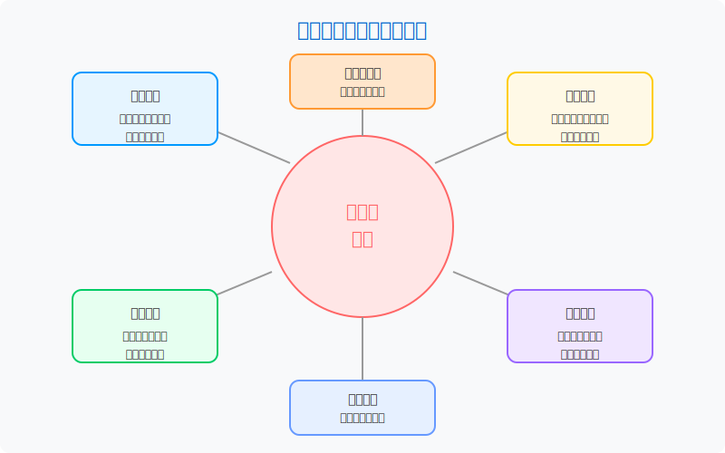

模块五：大模型API调用与智能应用
大模型API调用与智能应用
模块概述
本模块旨在帮助学生理解大型语言模型(LLM)的基本原理，并掌握如何通过API调用大模型构建智能应用。随着GPT、Claude等大型语言模型的快速发展，它们已成为构建智能应用的强大工具。通过学习如何与这些模型交互，学生将能够开发各种创新应用，如智能问答系统、内容生成工具、数据分析助手等，为传统业务流程带来智能化转型。

学习目标
完成本模块学习后，您将能够：
- 理解大型语言模型的基本原理与能力边界
- 熟练使用主流大模型API进行开发
- 掌握提示工程(Prompt Engineering)的关键技巧
- 构建基于大模型的简单智能应用
- 了解大模型应用开发中的最佳实践和伦理考量
大语言模型基础
大语言模型的核心特性
- 基础能力
- 文本生成与续写
- 问答与对话
- 内容摘要与改写
- 代码生成与分析
- 高级特性
- 上下文学习(In-context Learning)
- 少样本学习(Few-shot Learning)
- 链式思考(Chain-of-Thought)
- 指令遵循(Instruction Following)
- 局限性
- 知识截止日期
- 幻觉(Hallucination)问题
- 偏见与安全问题
- 长文本处理能力
主流大模型与API
开放API模型
各大厂商提供的商业API服务：
- OpenAI API (GPT-3.5/GPT-4)系列
- Anthropic Claude API
- Google Gemini API
- Meta Llama 2/3系列
- 国内主流大模型API(文心一言、通义千问等)
API访问基础
使用API调用大模型的基本流程：
- API密钥管理与安全实践
- 请求参数配置与优化
- 响应解析与处理
- 错误处理与重试策略
成本与限制管理
合理控制API使用成本和遵守限制：
- 计费模式理解(按Token计费)
- 速率限制(Rate Limit)处理
- 批量处理与缓存策略
- 成本优化最佳实践
提示工程(Prompt Engineering)
提示工程基础
设计有效提示的核心原则：
- 清晰明确的指令
- 角色设定(Role Prompting)
- 格式控制与输出结构化
- 示例与少样本学习
高级提示技术
提升大模型能力的技巧：
- 思维链(Chain of Thought)
- 自洽性(Self-consistency)
- 思维树(Tree of Thoughts)
- 提示模板设计与复用
提示调优与评估
优化和评估提示效果：
- 系统提示与用户提示分离
- A/B测试提示效果
- 提示版本管理
- 质量与一致性评估
大模型应用开发
智能对话系统
构建基于大模型的对话应用：
- 聊天机器人架构设计
- 对话历史管理
- 个性化与记忆机制
- 多轮对话策略
内容生成应用
利用大模型生成各类内容：
- 文案与创意写作助手
- 自动摘要与内容改写
- 数据增强与生成
- 多模态内容生成
知识增强应用
结合外部知识的应用：
- 检索增强生成(RAG)
- 知识库与文档问答
- 垂直领域专家系统
- 数据分析与解释
特定任务工具
针对特定业务场景的应用：
- 代码助手与开发工具
- 数据分析与可视化助手
- 文档处理自动化
- 教育与学习辅助工具
框架与工具介绍
LangChain入门
流行的大模型应用开发框架：
- 基本组件与架构
- Chains与Agents
- 记忆与状态管理
- 提示模板与优化
LlamaIndex使用
专注于知识增强的框架：
- 文档加载与处理
- 索引构建与查询
- 知识图谱集成
- 自定义检索策略
其他辅助工具
辅助开发与部署的工具：
- Streamlit等快速UI构建
- FastAPI开发后端服务
- 向量数据库(Pinecone, Weaviate等)
- 监控与分析工具(Weights & Biases等)
实践与伦理考量
应用测试与评估
确保应用质量和性能：
- 大模型输出质量评估
- 用户体验测试
- 性能与响应时间优化
- A/B测试与迭代优化
伦理与安全考量
负责任地使用大模型技术：
- 内容过滤与安全guardrails
- 隐私保护与数据安全
- 偏见识别与缓解
- 透明度与归因
部署与监控
将应用部署到生产环境：
- 服务架构设计
- 容器化与云部署
- 监控与告警设置
- 持续改进策略
行业应用案例
商业智能与分析
- 自然语言查询数据库
- 智能报表生成与解读
- 业务洞察自动提取
- 趋势预测与建议
客户服务与支持
- 智能客服机器人
- 知识库自动问答
- 个性化服务推荐
- 情感分析与响应
内容创作与营销
- 智能内容创作助手
- 营销文案自动生成
- 个性化内容推荐
- 社交媒体管理工具
推荐工具
大模型应用开发的主要工具：
- API与SDK
- OpenAI API: GPT系列模型的官方接口
- Hugging Face: 开源模型库与接口
- Azure OpenAI Service: 企业级API服务
- 国内API服务: 文心API、千问API等
- 开发框架
- LangChain: 大模型应用开发框架
- LlamaIndex: 知识检索增强框架
- Semantic Kernel: 微软语义核心框架
- Streamlit: 快速构建AI应用界面
- 辅助工具
- 向量数据库: Pinecone, Weaviate, Chroma
- 评估工具: RAGAS, TruLens
- 监控工具: LangSmith, Helicone
- 提示管理: PromptLayer, Prompt flow
学习资源
基础教程
进阶资源
在线课程
进阶探索方向
- 大模型微调(Fine-tuning): 针对特定任务微调模型
- 多模态应用: 结合图像、音频的大模型应用
- Agent开发: 自主代理系统与工具使用
- 自部署开源模型: 本地部署开源大模型
- 大模型编排(Orchestration): 多模型协作与自定义工作流